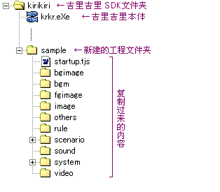

Note
拖鞋广告：
假如您使用的是KCDDP 的 KAGeXpress系列，以下这些准备步骤均可省略，直接运行制作向导，按照提示进行操作即可。
首先，在吉里吉里 SDK 的文件夹 ( 包含有文件
krkr.eXe的文件夹) 下，创建一个与你的游戏工程名相关的文件夹，文件夹可以任意命名。但是，此时请先避免使用"
Data" 这个文件夹名。 (请到需要发布游戏时再改名为
Data )。这个文件夹，称为
工程文件夹。
接着，将 KAG 的系统复制到这个文件夹内。即将
template 文件夹（下载后的 LZH 压缩文件解压缩后的内容）的
内部内容( 不包括
template文件夹本身 ) 复制到工程文件夹内。
Note
(拖鞋译注：
我实在忍不住了,直接说"将整个template复制一份出来然后改名"不就好了…)
具体工程文件夹的内容将如下图所示。

复制后的文件列表
之后，请将
system 文件夹中的
Config.~new 这一文件，改名为
Config.tjs 。然后，请用文本编辑器打开
Config.tjs 。
Config.tjs之外，可以修改相关设定的地方还有很多，这些将留到以后再说。关于Config.tjs的更详细的说明，请参考
Config.tjs 内的注释。
假如、复制过去的文件夹内有写着「〜这个文件删除也没关系〜」字样的文件，这是为避免部分软件解压缩相关档案时，不会解压空文件夹而预留的占位文件。删除这类文件是没有关系的 ( 当然留着也没有什么问题 )。
Note
将 KAG 升级，其基本的做法是：将新的 KAG 系统的
system 文件夹内容，覆盖现有的
system 文件夹内容即可。在新的 KAG 系统升级后第一次运行时，将自动对
Config.tjs 升级，请根据画面的指示进行操作。